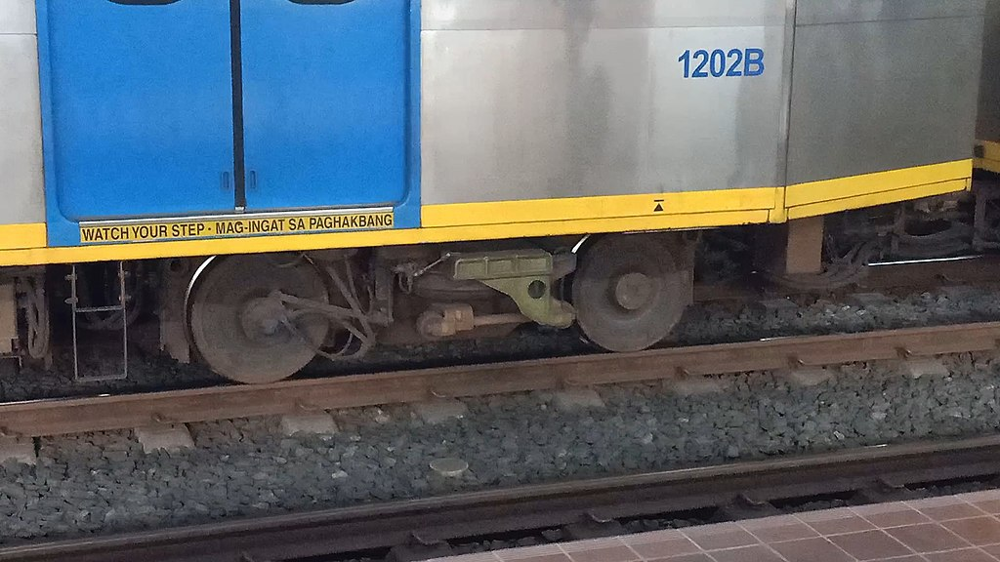

LRTA 1200 class
The LRTA 1200 class is the third-generation class of high-floor light rail vehicles (LRV) of the Light Rail Transit Authority (LRTA) servicing the Manila LRT Line 1. Purchased as part of the second phase of the capacity expansion of the line, the trains entered service in December 2006.
| LRTA 1200 class | |
|---|---|

A 1200 class train at Roosevelt station in August 2023

Interior of the 1200 class at Balintawak station in February 2022
|
|
| In service | 2006-present |
| Manufacturer |
Kinki Sharyo
Nippon Sharyo |
| Built at | Osaka[a]/Aichi,[b] Japan |
| Constructed | 2005–2006 |
| Entered service | December 2006 |
| Number built | 48 vehicles (12 sets) |
| Number in service | 44 vehicles (11 sets) |
| Formation | 4 cars per trainset (Mc–M–M–Mc) |
| Fleet numbers | 1201-1248 |
| Capacity | 1,388 passengers[c] |
| Operator(s) |
|
| Depot(s) | Baclaran |
| Line(s) served | LRT Line 1 |
| Specifications | |
| Car body construction | Stainless steel |
| Train length | 105.7 m[d] |
| Car length |
Driving cars: 26.35 m
Intermediate cars: 26.5 m |
| Width | 2.59 m |
| Height | 3.91 m |
| Floor height | 920 mm |
| Platform height | 690 mm |
| Entry | Step |
| Doors | 4 per side, sliding pocket-type; 1,500 mm × 1,900 mm |
| Articulated sections | 2 per PRV |
| Wheel diameter |
New: 660 mm
Worn: 600 mm |
| Wheelbase |
Per bogie: 1.9 m
Bogie centers: 10 m Total: 20 m |
| Maximum speed | 60 km/h |
| Weight |
Driving car: 37.4 t
Intermediate car: 36.5 t |
| Axie load | 10.3 t |
| Steep gradient | 4% |
| Traction system | Mitsubishi Electric IGBT–VVVF |
| Traction motors | 4 × Mitsubishi Electric 105 kW 3-phase AC induction motor |
| Power output | 420 kW |
| Transmission | Two-stage reduction drive |
| Acceleration | 1.1 m/s² |
| Deceleration | 1.3 m/s² |
| Auxiliaries |
440 V AC IGBT static inverter
110 V DC batteries |
| HVAC | Air-conditioned; roof-mounted duct type (2 units per LRV) |
| Electric system(s) | 750 V DC overhead wire |
| Current collector(s) | Single-arm pantograph |
| UIC classification | Bo′+2′+Bo′ |
| Wheels driven | 8 out of 12 per LRV |
| Bogies | Inside-frame type |
| Minimum turning radius | 25 m |
| Breaking system(s) | Regenerative and electro-pneumatic (Knorr-Bremse) |
| Safety system(s) |
Siemens Mobility ATP (2007–2022)
Alstom Atlas 100 ATP (2022–present) |
| Coupling system(s) | Semi-permanent |
| Multiple working | Within type |
| Track gauge |
1,435 mm
Standard track gauge |
| Seating | Longitudinal |
Package A of the LRT Line 1 Capacity Expansion Project Phase 2 included the procurement of 48 light rail vehicles (LRV), configurable to 12 four-car sets. In 2005, the joint venture of Sumitomo Corporation and Itochu received the order of 48 LRVs and signed a construction contract with Kinki Sharyo and Nippon Sharyo to manufacture and supply the vehicles. The capacity expansion project was funded by Japan's official development assistance.
The LRV design is a 6-axle rigid body consisting of two articulated cars
Car body
The car body has a length of 26 meters without couplers, a width of 2.59 meters, and a height of 3.91 meters. 1200 class LRVs have 4 electronic sliding doors on both sides. The train car body is made of beadless lightweight stainless steel, with composite materials on the indoor panels and aluminum on the inner bone to reduce weight. 1200 class LRVs have 4 electronic sliding doors on both sides.Each light rail vehicle has two roof-mounted air-conditioning units that has a cooling capacity of 41,000 kilocalories (170,000 kilojoules). In total, there are eight air-conditioning units in a four-car train set.
During the production of the 1200 class trains, a mock-up model was constructed. In December 2005, officials from the Light Rail Transit Authority and the project consultant of the capacity expansion project, Manila Tren Consortium inspected the mock-up model at the factory of Kinki Sharyo factory in Osaka, Japan. It was then displayed at the line's depot in Baclaran, Pasay in March 2006. The length of the mock-up model is 14 meters long, or just 54% of the 26-meter vehicle length.

A 1200 class train (front cab) at 5th Avenue station in October 2016.

A 1200 class train at Balintawak station in December 2021.
Interior
The interior is color-toned based on light and dark two-color green in the seats to complement the landscape of Manila. Seats are made of fiber reinforced plastic and has an aluminum bracket type cantilever longitudinal seat for reducing weight. Seating and grip sticks are designed to have ergonomic dimensions, aside from equipment arrangement inside the cab. A wheelchair-compatible space is provided beside the gangway of the intermediate car, alongside an equipped fire extinguisher.
1200 class interior with new door stickers
Wheelchair strap and space, and fire extinguisher
Mechanical
The bogies are of inside-frame type, similar to the 1000 class. Like all LRT Line 1 rolling stock, the wheel diameter is 660 millimeters. Each LRV has three bogies consisting of two motorized bogies at the ends of the LRV and one trailer bogie under the articulation. The primary suspension is a chevron rubber spring, while the secondary suspension is an air suspension, similar to the 1100 class.Semi-permanent couplers are present in the ends of each light rail vehicle except the driving cab section of the MC car.

The inside-frame bogie of a 1200 class LRV

Semi-permanent couplers of the 1200 class
Electrical
The traction control system is IGBT–VVVF that drives the four main motors of the two carriages. The traction motors are totally enclosed, self ventilated 3-phase AC induction motors with a power output of 105 kilowatts. The traction equipment is manufactured by Mitsubishi Electric.The auxiliaries are 440 volt alternating current static inverters and 110 volt direct current batteries.
Mitsubishi Electric VVVF inverter of a 1200 class LRV
Brakes
Knorr-Bremse manufactured the brakes of the 1200 class. The resistors are mounted on the roof for backup regenerative brakes. The VVVF controller has an Electronic Command braking device that uses regenerative and electronically controlled pneumatic brakes. Disc brakes are present on the bogies.Formation
| Four-car configuration | ||||||||
| Car no. | 1 | 2 | 3 | 4 | ||||
|---|---|---|---|---|---|---|---|---|
| Designation | MC | M | M | MC | ||||
| Numbering | 1201A | 1201B | 1202A | 1202B | 1203A | 1203B | 1204B | 1204A |
Details of the car designations are listed below:
The 3rd-generation trains were inaugurated by former Japanese Prime Minister Shinzo Abe and former President Gloria Macapagal Arroyo on December 9, 2006. The trains raised the line's capacity from 27,000 passengers per hour per direction to 40,000 passengers per hour per direction.
On February 25, 2010, a 1200 class train was used in a test run of the LRT Line 1 North Extension and the MRT Line 3 as part of the MRT-LRT Closing the Loop project that intends to integrate the LRT Line 1 and MRT Line 3 operations, but the integration of operations has not been pursued.
Out of the 12 sets, only 11 sets remain operational, with three light rail vehicles inoperable after a collision as of 2013.
The 1200 class trains operate in a 4-car configuration. However, there are some occurrences of 1200 class trains operating in a 3-car formation.
Special themed trains
In September 2018, a 3rd generation trainset was decorated with a specialGabay Gurodecoration to celebrate the National Teachers' Month in the Philippines. The decoration has a library-themed look with images of books. The special themed train was launched on September 6, 2018 and ended a year later.
- On June 24, 2010, two trains (1000 and 1200 class) collided at Balintawak station. As a result, LRVs 1248 and 1247 sustained damage. There were plans to restore it, but the involved cars remain idle as of 2022.
- On February 18, 2011, two trains (1000 and 1200 class) collided near Roosevelt Station in Quezon City at the reversing tracks, around a kilometer away to the east. There were no passengers on board when the incident happened. This caused the Roosevelt and Balintawak stations to remain closed for two months until the stations were reopened on April 11, 2011. An investigation was conducted and was shown that one of the drivers was texting when the incident occurred. This however caused LRV 1236, the 3rd generation unit involved in the incident, to be in idle state and has not yet been restored for service.
- On May 23, 2015, thousands of passengers were stranded after two trains (1000 and 1200 class collided near the Monumento station. A train driver was hurt after the impact caused his head to slam into the dashboard of the train. The accident, later revealed to be caused by power fluctuation that affected the signalling system, forced passengers to alight from the station until services was restored around 1 pm at the same day.
Legend
| Out of service, scrapped or decommissioned |
| Set No. | 1 | 2 | 3 | 4 | Manufacturer |
|---|---|---|---|---|---|
| 1 | 1201 | 1202 | 1203 | 1204 | Kinki Sharyo |
| 2 | 1205 | 1206 | 1207 | 1208 | Kinki Sharyo |
| 3 | 1209 | 1210 | 1211 | 1212 | Nippon Sharyo |
| 4 | 1213 | 1214 | 1215 | 1216 | Nippon Sharyo |
| 5 | 1217 | 1218 | 1219 | 1220 | Kinki Sharyo |
| 6 | 1221 | 1222 | 1223 | 1224 | Kinki Sharyo |
| 7 | 1225 | 1226 | 1227 | 1228 | Nippon Sharyo |
| 8 | 1229 | 1230 | 1231 | 1232 | Nippon Sharyo |
| 9 | 1233 | 1234 | 1235 | 1236 | Kinki Sharyo |
| 10 | 1237 | 1238 | 1239 | 1240 | Kinki Sharyo |
| 11 | 1241 | 1242 | 1243 | 1244 | Nippon Sharyo |
| 12 | 1245 | 1246 | 1247 | 1248 | Nippon Sharyo |